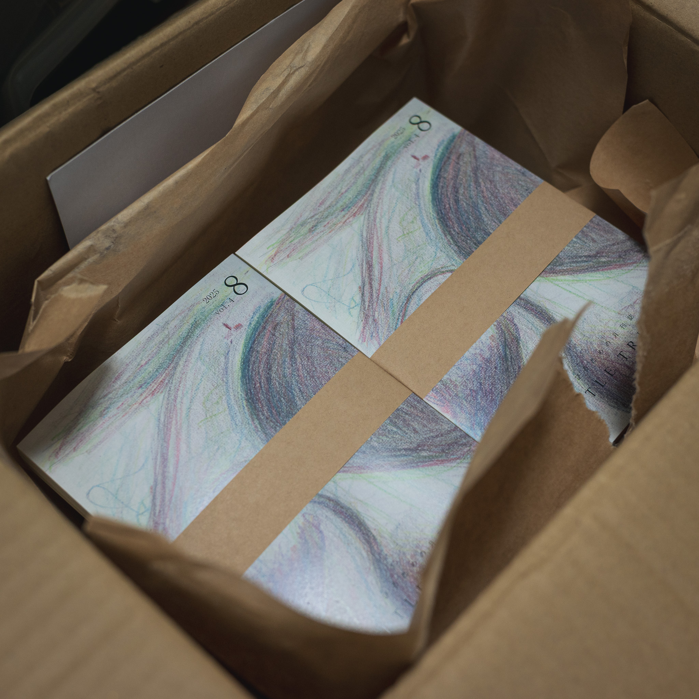

LITTLE TREE vol.4
2025年8月号。この号を持って休刊に追い込まれる。ページ数もどんどん増えてきて、150ぺージを超えた。分厚さには満足している。
夏のあいだ、二週間ほど山崎さんはローマなど海外周遊に行っていて、束の間の平和が事務所に訪れていた。
そのあたりは少しだけ元気だった。八月の後半には施主打ち合わせが二週間に四回くらいあり、本当に頭がおかしくなってしまうかと思った。
そう思うと、少しずつ上向いてきていたのかもしれない。この号は急な失踪によって届けられていない人が少なからずいる気がする。ごめんなさい。
もし欲しい人がいたら、実家に積まれているので、回収してきます。雑誌はまたつくろうと思っている。またいつか、一緒に雑誌を作る人がいなくなって、ひとりぼっちになってしまったら、またこの続きをやっていきたい。
編集：舟木健太郎
執筆：舟木健太郎 | 丁子紘亘
表紙：舟木健太郎
発行：Atelier YAMORI
